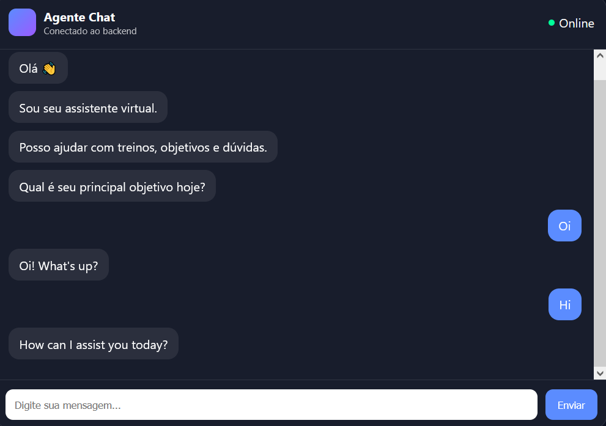

Application Preview

1. Tech Stack
Backend
- Node.js
- Express
- JavaScript (ESModules)
- Layered structure (routes, controllers, services)
Integration
- n8n (Webhook automation engine)
Frontend (Testing Interface)
- HTML
- CSS
- Vanilla JavaScript (DOM manipulation)
Deployment
2. Architecture
Frontend → POST /agent → Controller → Service → n8n Webhook → JSON
Response
Project Structure
server.js routes/ agent.routes.js controllers/ agent.controller.js
services/ agent.service.js
3. Concepts Applied
- Separation of concerns
- Modular routing
- Async/await flow control
- Input validation patterns
- HTTP status codes (200, 400, 500)
- Error handling strategies
4. Features Implemented
- REST API endpoint (POST /agent)
- Layered backend architecture
- Async webhook communication
- JSON-based responses
- Web chat interface for testing
- Production deployment
5. Important Bugs & Fixes
Internal Server Error (500)
- Unhandled async logic
- Inconsistent service return
- Webhook response validation
Router Configuration Issues
- Standardized Express Router usage
Deployment Issues (Render)
- Adjusted start script
- Configured Node engine properly
Git Repository Cleanup
- Removed duplicate remotes
- Restructured commit history
6. Result
- Working modular backend agent
- External workflow integration via n8n
- Live deployment
- Real debugging experience